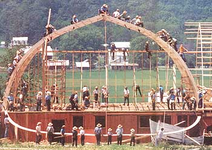
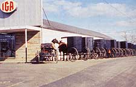
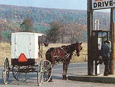
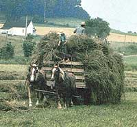

ENVIRONMENTALISM AND SPIRITUALITY PART IV
IT HAPPENED WHILE HANNAH WAS driving Albert, David, Colt and Claude, four Belgian draft horses that were pulling both the hay baler and the flatbed loading wagon. I was behind on the wagon, grabbing the blocks of fresh May hay the gas-powered baler churned out and stacking them in a 3-33-2-1 pattern.
Suddenly Hannah stopped the team, jumped out, walked into the mow of cut hay just ahead and gently picked up two immature Savannah sparrows. She carried them out of harm's way, setting them in a timothy field that wasn't going to be cut for at least two weeks (until the young bobolinks nesting in it were fully fledged).
I rested, wiping sweat and marveling at this Amishwoman's concern for two baby birds. Then I looked back toward the barn and saw 10-year-old Samuel driving the family's peculiar 65-horse John Deere tractor, with its little pneumatic tires up front, but uninflated, bolted-on rubber ones in back. He was bringing out my next empty wagon. Yes, that's when it happened-when I got my first clue into understanding the riddles of Amish culture.
The Amish are the answer to a question, I realized. All the odd, apparent contradictions I was witnessing were part of an overall cultural solution to a broad, basic problem. A horse-drawn gasoline engine? A tractor with two different types of tires, which hauled things to and from the field but did no work in the field? The fact that I could see the farmer next door loading all his hay loose and then baling it-with an identical gasoline baler-only after it was in his barn? Somehow these things were all answers to the same question.
What was the question?
Ah, that's what I still had to figure out.
Three days earlier, I had driven to the Yoder place in Amish-populated Elkhart County, Indiana. I was nervous. True, Amos Yoder had invited me to visit him at his 65-acre dairy farm. But everything I saw as I got closer, from the horse droppings on the highway to the plain black carriages filled with faces that looked none too happy to see another English (Amish call outsiders English in reference to America's primary language), made me feel out of place.
Then I drove up the driveway of the immaculate Yoder farm (lawn trim and green, barns and home clean and white), got out, met Amos and was introduced to Hannah, his wife. Hannah, short and sturdy, scanned me with eyes at once cordial and cautious. I hardly noticed; I was staring at her clothes. Not the plain, blue dress, the triangular shawl pinned to an apron, the simple white devotional cap. I'd expected all that. No, it was her shoes. She was wearing Sears' sneakers with Velcro fasteners!
Clearly, everything wasn't going to be quite as different as I'd anticipated. And somehow that was reassuring. It made this whole new world I had just entered seem less strange.
Indeed, that was one of the main lessons I learned on my visit: Amish people are, well, just people. That may not sound like much of a discovery, but the more I'd read about them, the more I'd learned how different they are from most Americans-how they have deliberately set themselves apart, based on biblical dictums to not be "part of this world," but rather to be a "peculiar people." Once among them, though, I was struck as much by what we shared as by what we didn't.
Hannah greeted me, wearing a plain, blue dress, white devotional cap- and Sears' Velcro sneakers!
Their kids sure acted like mine. When I dropped a bit of meat at the dinner table, 10-year-old Samuel (a cherub-faced scamp) was as quick to crack, "A swing and a miss!" as my own nine-year-old son could ever be. Cute, wire-thin, eight-year-old Katie was as willing to debate who should feed the pet fox as my Jesse is to haggle over feeding our dog. Solemn Marsha, the 13-year-old, could demonstrate the moodiness of adolescent angst as well as any teenager I know. Lovely Ruth, the 18-year-old, though normally calm and peaceful, would argue forcefully with her mom over the best choice of glasses for serving milkshakes at her volleyball party. (A riddle: How does an Amish family fix chocolate milkshakes? By mixing vanilla ice cream, milk and Nestle's Quik . . . with a hand eggbeater!) And the oldest offspring, 20-year-old Jonathan, had a strong hankering to play softball on the first day of haying. (That's how I got the job of loading the wagon.)
The parents, too, were "just plain folk." Hannah had a reputation for spunkiness. Indeed, Amos said that's what first caught his eye: She stuck her tongue out at him. (Hannah: "What was I supposed to do? A bunch of boys I don't know riding by in a car. I was 13!") Amos, meanwhile, showed a particular fondness for food. However, he denied that his love for farm cooking contributed to a slight midriff bulge. "Our good well water has too many calories," he claimed.
The Yoders are all fine, warm people, and I came to value their friendship. The only reason I've perhaps "told stories on them" here in print is to emphasize Amish humanness. Remember such qualities, because, by necessity, the rest of this piece will focus mainly on the differences between their culture and mainstream American society.
Ironically, I was poignantly reminded of those differences the last night of my visit. As a thank-you treat, I took the family out to dinner, escorting them in my Avis sedan to a burger joint in a nearby town. As soon as I entered that restaurant with an Amish family, I felt an electricity of separateness-like a black man on the white side of Selma. Nothing overt, just a feeling in the air. We all pigged out on such delicacies as peanut butter milkshakes and bacon double cheeseburgers (and even ordered a couple of take-out custards for the grandparents back home). Then the waitress brought the check. Or, rather, checks: She gave one to Amos and a separate one to me.
So, on to differences. The Yoders, like other Old Order Amish, dress in a plain, carefully prescribed manner, from the full beards (but shaved mustaches) and broad-brimmed hats of the men to the long, solid-toned dresses and devotional caps of the women. They drive black, horse-drawn carriages, not cars. They have no electricity or personal telephones. No radios, TVs or musical instruments. They speak a separate language, Pennsylvania Dutch (actually, Dietsch , their term for German). However, they very courteously spoke English-even to each other-whenever I was present.
Still, their home isn't as stark as it may sound. It holds many modern conveniences: a propane (and therefore wonderfully silent) refrigerator, white-gas reading lights, indoor plumbing with hot and cold running water even a basement washing machine powered by a small Honda lawn-mower engine. ("The women love the little Hondas," Amos said. "They're so easy to start.") So the family has many basic conveniences normally provided by electricity.
Likewise, when they want to make a phone call, they can walk down the road to a shared neighborhood phone (kept in a locked homebuilt booth). If they need to get somewhere a good distance away, they can hire a car and driver to take them there.
More of these apparent cultural contradictions-those puzzling answers to that still undefined question.
To help figure it all out, I turned to Amish history and literature. This Protestant religious group was formed in the 16th century in Switzerland. Their most visible early distinction was their belief in the baptism of informed adults-not of infants. (Hence, their original name was the Anabaptists , or rebaptizers.) Eventually they split into two groups, the Amish (after Jacob Amman) and the Mennonites (after Menno Simons). Today there are at least 13 degrees of Amishness or Mennoniteness. The most liberal drive cars and dress like other Americans. The most conservative don't even have iceboxes. Yoder's family is part of a typical Old Order (fairly conservative) branch.
The central principle of Amish creed and culture is gelassenheit , a word meaning self-surrender, or submission to God's will. In contrast to the "I believe, therefore I am saved" credo of evangelistic Christianity, the Amish believe that the basis of redemption is the practice of gelassenheit , dying to one's self. And how does one do that? First, by not asserting oneself. As Amos told me, "The word 'proud' is anathema to the Amish." (For this reason, the Yoders asked me to take no photographs of them and to change their names in this article.) Wearing similar clothes and living prescribed lifestyles both help check prideful individuality. The second way to practice gelassenheit is to work on building community. The more everyone helps others and builds a loving brotherhood, the more they all surrender self and better live out their Christian ideals.
To this end, the Amish have a very carefully laid out set of rules to follow-the Ordnung -which is defined by scriptural texts and by community consensus. Church members who violate the Ordnung and won't heed warnings to stop are, again by congregational consensus, put under the Meidung, the ban. Members cannot socialize or do business with such shunned ones until they repent. (The community will, however, help them out if the need arises.)
Thus, the Amish don't have a Sunday only religion but try to closely follow and live by the Scriptures in everything they do. Following passages in the New Testament, they don't "conform to the ways of the world" but live in a separate manner, not letting themselves become "yoked" to unbelievers. They don't swear oaths, and they are passivists.
And here I found the question I was looking for. From the Amish point of view it is, How do you create an entire community dedicated to God and not to the world? All the puzzling cultural answers I had observed followed from their solution to that problem: by making decisions as a community. If individuals had complete freedom to make their own cultural choices, the overall community values would inevitably erode. (Someone would get a car, TV or other product of mainstream culture, and eventually others would follow suit.) Yet new decisions have to be made. The culture must be able to adapt as needed for survival, to adjust to the outside world without getting swallowed up by it. So every local Amish congregation can, by consensus, modify the Ordnung when necessary.
Further, each decision has a rationale behind it. So it's OK to make outgoing calls on a community phone but not to have one in your home? Yes, because the only people you can call on a community phone are English (not other Amish), so the phones will be used only for necessary business. You can't own a car but can hire a driver? Then if you need a car for an exceptional reason (perhaps to get a relative to a hospital), you can arrange for one, but your normal visiting circle will still be limited to your community of nearby neighbors. You can't have electricity but can have some normally electric appliances? That way, you won't be yoked to the unbeliever via a power line-and won't get engulfed by all the electrical doodads of mainstream consumer culture. You can use a tractor for hauling (or for stationary power when running such tools as a grinder) but not for field work? That way, your farm will stay small (horses can work only so much land), and you won't swallow up your neighbors'. The tractor has pneumatic tires up front (to save wear on the engine) but lugged ones in back (which can't be used on state roads and so keep you from using it for transportation). Even the puzzling fact that Yoder uses his baler in the field but his neighbor does so only in the barn comes clear. The neighbor belongs to a different local church, and his congregation made a different ruling on the best way to limit gasoline-powered farm machinery.
Ultimately, no matter where the Amish draw their cultural lines, there will be places along the boundary that appear contradictory. The point, though, is drawing a line at all : using values to make cultural choices.
Reframe the same question from another point of view and this spiritual query becomes a very important environmental one: How do you control technology instead of having it control you? As Kentucky farmer-essayist Wendell Berry has written, "The Amish are the truest geniuses of technology, for they understand the necessity of limiting it, and they know how to limit it."
Mainstream American culture has never dared address the possibility of choosing between which new technologies will have positive environmental impacts and which won't. If someone invents it-from an electric hair dryer to the nuclear bomb-we use it. Occasionally, after a choice has already caused great damage, we ban or limit it (RIP, DDT). But have we ever shown the cultural foresight or courage to close the door on a possibility beforehand?
The Amish are thus not a backward, antiquated culture (as the thriving English tourist industries portray them) but a traditional-modern hybrid that is fully aware of the outside world and chooses carefully from its offerings. Amish children are not kept ignorant of the lures and luxuries of the outside world. Indeed, some teenage Amish experiment with driving, drinking and more. (Jonathan told me of some Amish boys who "like to sow their wild oats, then pray for a crop failure.") They then feel that they know enough of both worlds to, when mature, make their own choices. And not all of them remain Amish: for instance, only two of Hannah's six siblings had.
The archetypal example of the difference between Amish and mainstream American thinking is agriculture. Conventional farms are often chemical addicts, with soil that gets high (yields) on drugs (chemical fertilizers and pesticides). The agribusiness credo: Bigger is better. So what if topsoil erodes by the truckload? If ever-increasing water usage drains eons-old aquifers? If family farmers and farm communities become extinct?
Now, look at the Yoder farm. Amos uses four-year crop rotation on his fields; corn to oats to wheat to hay. This rotation provides rich soil fertility (no chemical fertilizers) and keeps down weeds (almost no herbicides) and harmful insects (no insecticides). Yoder, along with most of his farming neighbors, is thus, while not entirely organic, a low-chemical farmer. He has low expenses, too; he grows much of his own fuel-the hay and grain for his draft horses.
Those horses provide other benefits. For instance, they don't compact the soil the way tractors do. Amish farmers who buy tractored farms find that the soil doesn't loosen back up until after three years of farming with horses. And Oberlin College researchers found that the Amish horse-worked farmland absorbs and holds almost seven times more water than conventional no-till fields.
True, a diversified, low-chemical livestock-and-crops farm requires more labor per acre than do today's monoculture spreads. But that's not a problem for the Amish, because they are successful breeders of the most vital farm crop of all: future farmers. The children in their typically large families all learn to help-little Katie was right out there at 5:30 in the morning washing and stripping udders. Children quit their Amish schools after the eighth grade and work on the family farm until they marry. And many of the children do stay in farming when they mature. Both Jonathan and Ruth planned to.
Likewise, Amish farmers help each other out. They join together to thrash each other's wheat or to get in a sick neighbor's hay. The community as a whole esteems farming as the most valued occupation; they feel that being close to the land is being close to God. (Amos, opening a screen door to let a bumblebee out, said, "You can feel the Creator in nature. You see his handiwork.")
Indeed, the real backbone of Amish agriculture is religion. Wendell Berry calls it "Christian agriculture, formed upon the understanding that it is sinful for people to misuse or destroy what they did not make." John Hostetler, author of Amish Society, points out that "soil has a spiritual significance for the Amish because God created it in the Garden of Eden. Man's first duty is to dress the garden, to till it and manage it as a good steward. Second, man is to keep the garden, protect it from exploitation." And Yoder told me, at once both lightly and earnestly, "It helps you act ecologically if you know you're going to hell if you don't."
What does all this mean to the larger American society? For one thing, that small-scale family farming can still work. Yoder grosses over $40,000 from 65 tillable acres, working steadily but by no means fanatically: I saw him take two naps in one day. Likewise, the Amish as a whole are doing fine. Their population in the U.S. has tripled (to 100,000) in the last 35 years. So chemical agribiz, with its environmentally destructive side effects, is not the only way to go.
The Amish also demonstrate-in vivid, day-today living-the premise upon which this four-part series has been based: that spiritual motivation can, indeed, lead to positive ecological acts.
Amish society isn't perfect. It is legalistic and restrictive. Internal differences have often caused disruptive divisions. And the difficulty of becoming, and living , Amish eliminates the possibility that their culture will ever spread widely.
But a backward tourist attraction? An agricultural anachronism? A bizarre religious cult? Rather, people of any faith can appreciate the ways the Amish, in all aspects of life, try to live their belief. Environmentalists should study the way the Amish work with nature, and the way these people include humans as a part of that relationship. (One Amish farmer-who in one day counted more than 1,800 young birds within 200 feet of his house-notes, "On this type of farm we enhance the land for wildlife rather than being detrimental.") And anyone interested in the conjunction of environmentalism and spirituality should admire the way that, more than any other contemporary culture in America, the Amish have joined the two.
|
The Amish method of rotating corn with hay nad other crops helped lessen the effects of the '88 drought. |
 Barn raisings and supermarkets: the first symbolizes the self-contained, community side of Amish culture; the other, the fad that the Amish do Interact with the outside, ""English"" world. |
 Owning a phone is an unpermitted ""yoke to the unbeliever."" Using a pay phone, however, is perfectly acceptable. |
|
 An ecological, spiritual small-farm subculture is thriving in the heartland of America. |
 |
|